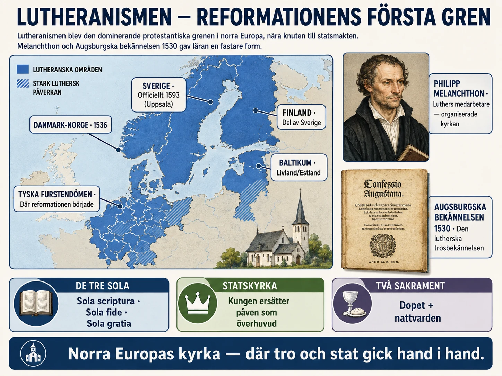
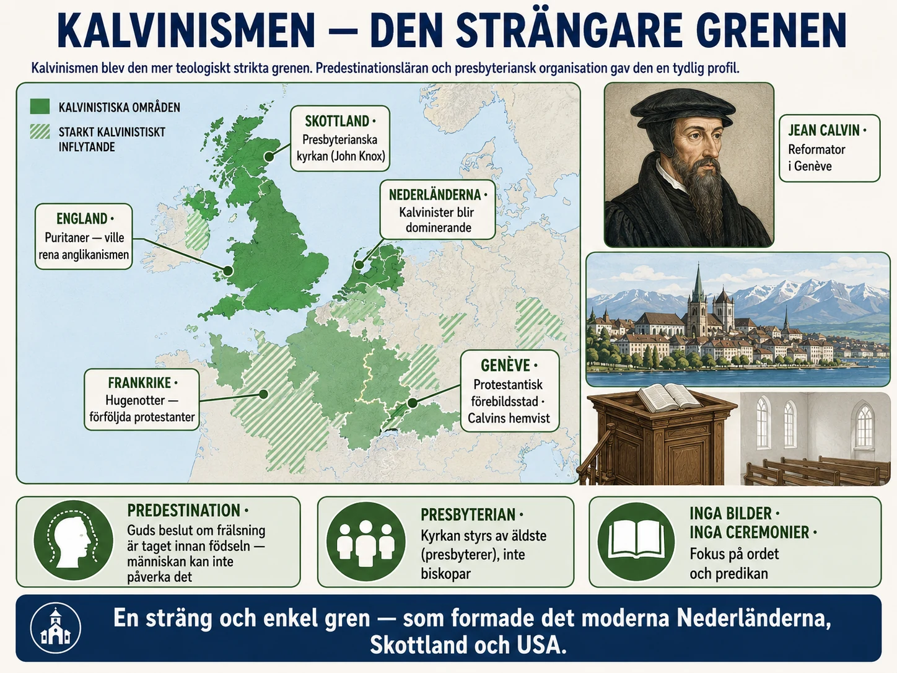
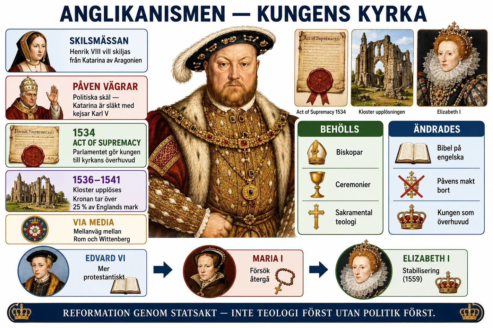
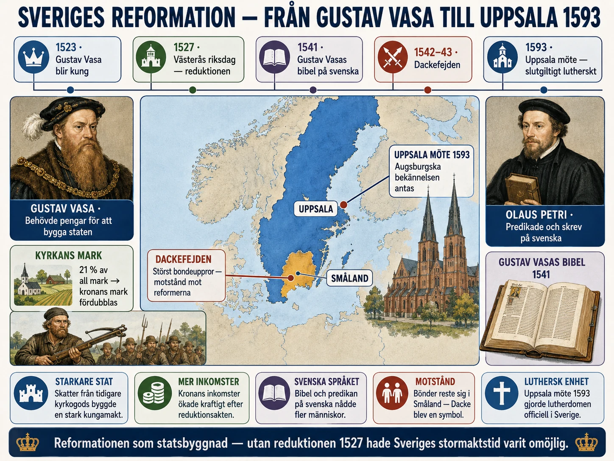
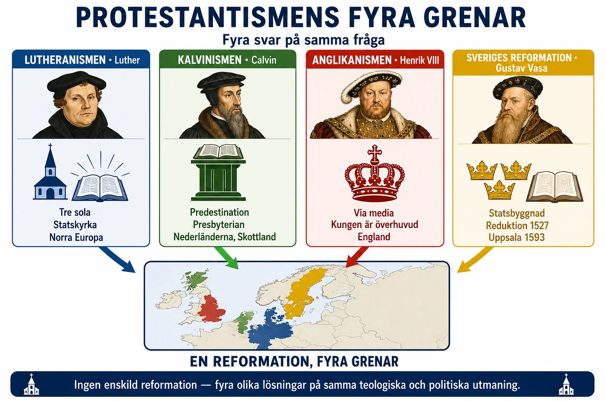

— lutheranism, kalvinism, anglikanism och Sveriges väg —
Titta på kartan innan du läser vidare:

I §1 läste du om Martin Luther, 95 teserna och brytet med Rom. Nu ska vi titta på vad protestantismen blev när den växte sig stark. Protestantismen splittrades nämligen ganska snart i flera grenar. Vi börjar med den första och största: lutheranismen.
Lutheranismen växte fram ur Martin Luthers kritik mot den katolska kyrkan. Den fick först starkast fäste i de tyska områdena, men spreds sedan till norra Europa: Danmark, Norge, Sverige, Finland och delar av Baltikum. Därför blev lutheranismen den viktigaste protestantiska riktningen i Skandinavien.
Kärnan i lutheranismen var de tre sola-orden du läste om i §1C: människan blir frälst genom tro och genom Guds nåd, och Bibeln är högsta auktoritet. Därför blev bibelläsning, predikan och undervisning mycket viktiga i lutherska kyrkor.
Luther ville inte skapa kaos i samhället. Han menade att kyrkan behövde reformeras, men att furstar och myndigheter fortfarande hade en viktig roll. Därför kom många lutherska kyrkor att organiseras nära staten.
I de tyska furstendömena kunde fursten bestämma att området skulle bli lutherskt. I Skandinavien blev lutheranismen ännu tydligare kopplad till staten. Kungen tog över mycket av den makt som tidigare legat hos påven. Kyrkan fanns kvar, men den lydde nu under kungen i stället för under Rom.
Detta innebar inte att kyrkan försvann. Präster, gudstjänster, dop, nattvard och kyrkobyggnader fanns kvar. Men ledningen förändrades. Den lutherska kyrkan blev ofta en statskyrka — en kyrka som var nära knuten till staten.
I den katolska kyrkan fanns sju sakrament: dop, nattvard, bikt, konfirmation, äktenskap, prästvigning och de sjukas smörjelse.
Luther menade att ett sakrament måste vara tydligt grundat i Bibeln. Därför behöll lutheranismen framför allt två:
Lutheranismen var inte den enda protestantiska grenen. Snart skulle två andra grenar växa fram:
Du möter dem i §2B och §2C.
I §1 läste du om Martin Luther, hans 95 teser och brytet med Rom. Nu ska vi titta på vad protestantismen blev när den växte sig stark. Det visade sig snart att protestantismen inte var en enda kyrka. Den splittrades i flera grenar. Vi börjar med den första och största: lutheranismen.
Lutheranismen växte fram ur Martin Luthers kritik mot den katolska kyrkan. Den fick först starkast fäste i de tyska områdena, men spreds sedan framför allt till norra Europa: Danmark, Norge, Sverige, Finland och delar av Baltikum. Därför blev lutheranismen den viktigaste protestantiska riktningen i Skandinavien.
Kärnan i lutheranismen var tanken att människan inte blir frälst genom att köpa avlat, göra särskilda religiösa handlingar eller lyda kyrkan som institution. Människan blir frälst genom tro och genom Guds nåd. Luther menade att Bibeln skulle vara den högsta auktoriteten, inte påven. Därför blev bibelläsning, predikan och undervisning mycket viktiga i lutherska kyrkor.
Detta är de tre sola-orden du möter i §1C: sola scriptura (endast Skriften), sola fide (endast tron), sola gratia (endast nåden).
Luther ville inte skapa kaos eller upplösa samhällets ordning. Han menade att kyrkan behövde reformeras, men att furstar och myndigheter fortfarande hade en viktig roll. Detta såg vi tydligt i hans hårda reaktion mot bondeupproret (§1D). Därför kom många lutherska kyrkor att organiseras nära staten.
I de tyska furstendömena kunde fursten bestämma att området skulle bli lutherskt. I Skandinavien blev lutheranismen ännu tydligare kopplad till staten. Kungen tog över mycket av den makt som tidigare legat hos påven och biskoparna. Kyrkan fanns kvar, men den lydde nu under kungamakten i stället för under Rom.
Detta innebar inte att kyrkan försvann. Präster, gudstjänster, dop, nattvard och kyrkobyggnader fanns kvar. Men kyrkans ledning förändrades. Den lutherska kyrkan blev ofta en statskyrka, alltså en kyrka som var nära knuten till staten.
I den katolska kyrkan fanns sju sakrament: dop, nattvard, bikt, konfirmation, äktenskap, prästvigning och de sjukas smörjelse.
Luther accepterade inte alla dessa som sakrament i samma mening. Han menade att ett sakrament måste vara tydligt grundat i Bibeln och kopplat till ett synligt tecken och ett löfte från Gud. Därför behöll lutheranismen framför allt två sakrament: dopet och nattvarden.
Dopet sågs som vägen in i den kristna gemenskapen. Nattvarden var också mycket viktig. Luther höll fast vid att Kristus verkligen är närvarande i nattvarden, även om han inte förklarade det på samma sätt som den katolska kyrkan. Därför blev nattvarden inte bara en symbolisk minnesmåltid, utan något heligt där Gud möter människan.
Predestination betyder att Gud i förväg har bestämt vilka som ska bli frälsta. Luther talade om Guds makt och människans oförmåga att rädda sig själv, men lutheranismen utvecklade inte predestinationsläran lika hårt som kalvinismen skulle göra senare.
För lutheraner låg betoningen snarare på att människan ska lita på Guds löfte. En människa ska inte försöka räkna ut om hon är utvald eller inte. Hon ska höra evangeliet, tro på Kristus och lita på Guds nåd.
Lutheranismen blev starkast i:
I dessa områden passade lutheranismen ofta furstarnas och kungarnas intressen. Genom att bryta med påven kunde de få större kontroll över kyrkan, dess rikedomar och dess undervisning.
Lutheranismen var inte den enda protestantiska grenen. Inom några decennier växte två andra grenar fram:
Och Sverige? Sverige blev lutherskt — men på sitt eget sätt, lett av Gustav Vasa. Det möter du i §2D.
En enkel orsakskedja: Luther kritiserade katolska kyrkan → hans idéer spreds till norra Europa → furstar i Tyskland och kungar i Skandinavien tog till sig den nya läran → de byggde statskyrkor där kungen tog över påvens roll → lutheranismen behöll dop och nattvard som centrala sakrament → predestinationsläran blev viktig men inte lika sträng som i kalvinismen.
När vi pratar om "lutheranismen" är det lätt att tänka oss en färdig kyrka. Men på 1520-talet existerade ingen sådan kyrka. Det fanns Luther, hans medarbetare i Wittenberg, och en växande rörelse av människor som accepterade hans idéer. Att bygga upp en organiserad kyrkostruktur krävde decennier av arbete.
Detta arbete utfördes inte främst av Luther själv. Han var teolog, predikant och översättare — inte administratör. Den som tog över det organisatoriska arbetet var hans närmsta medarbetare Philipp Melanchthon (1497–1560). Han var humanist, klassisk lärd och systematisk tänkare. Melanchthon skrev den första sammanfattningen av luthersk lära — Loci communes (1521) — och arbetade fram texten som senare blev den lutherska huvudbekännelsen, Augsburgska bekännelsen från 1530.
Augsburgska bekännelsen är värd att uppmärksamma eftersom den definierar vad lutheranismen är. Den skrevs av Melanchthon och lades fram för kejsare Karl V vid riksdagen i Augsburg år 1530.
Bekännelsen försökte visa att lutheranismen inte var en ny religion utan en återgång till äkta kristendom. Den var medvetet försonande — Melanchthon var mer diplomatisk än Luther och hoppades att en kompromiss med katoliker var möjlig. Det blev ingen kompromiss. Men dokumentet etablerade vad luthersk lära innebar i 28 punkter. Det blev grunden för lutheranismens kyrkliga identitet i hundratals år framöver. När Sverige formellt antog lutheranismen vid Uppsala möte 1593 (du möter detta i §2D) var det Augsburgska bekännelsen man hänvisade till.
En av Luthers mest inflytelserika idéer var den så kallade två rikens-läran. Den förklarar varför lutheranismen blev så statlig, så ordningsälskande, så litet revolutionär.
Luther menade att Gud styrde världen genom två riken parallellt:
En kristen lever i båda rikena samtidigt. Inåt är hon fri inför Gud. Utåt ska hon lyda lagen och myndigheterna. Detta var Luthers svar på den fråga bondeupproret hade ställt: kan kristen frihet bli social frihet? Luthers svar var nej. Andlig och politisk frihet hör inte ihop.
Det är detta som gör att lutheranismen blev så konservativ politiskt, även när den var radikal teologiskt. Det är därför Sveriges Gustav Vasa kunde anta lutheranismen utan att riskera sin makt — tvärtom stärkte den hans makt.
Vi har redan sett att lutheranismen behöll dopet och nattvarden. Men frågan om nattvarden var faktiskt en av reformationens stora interna konflikter.
Luther var radikal mot katolicismen. Han avvisade den katolska läran om transsubstantiation — att brödet och vinet bokstavligen förvandlas till Kristi kropp och blod när prästen säger orden. För Luther var Kristus närvarande "i, med och under" brödet och vinet. Närvaron var verklig, men inte fysisk-kemisk.
Men Luther var konservativ mot andra protestanter. Den schweiziske reformatorn Huldrych Zwingli (1484–1531) menade att nattvarden var en symbolisk måltid — bröd och vin var bara tecken, ingen verklig närvaro. När Luther och Zwingli möttes i Marburg år 1529 för att försöka enas hände något dramatiskt. Luther vägrade till slut räcka Zwingli handen och kallade honom kättare. "Ni har en annan ande än vi."
Detta visar något viktigt. Luther var inte en protestant som ville bryta med all tradition. Han var en katolsk munk som ville reformera kyrkan inom Bibelns och tidigkristendomens ramar. Han avvisade både katolicismens överbyggnader och Zwinglis radikalitet. Det är därför lutheranismen står närmare katolicismen i ritual och teologi än vad kalvinismen senare skulle göra.
Det är värt att fråga: varför fick lutheranismen så starkt fäste i Tyskland och Skandinavien — men inte i södra Europa?
Tre faktorer samverkade:
1. Politiska intressen. Tyska furstar, danska kungar, svenska kungar — alla såg en chans att stärka sin egen makt genom att bryta med påven. I södra Europa var det annorlunda. Spanien var katolskt och starkt nationellt enat. Den spanske kungen behövde inte bryta med påven — han hade redan stort inflytande över kyrkan i sitt rike. Italien hade påven inom sig — där var katolicismen inte bara tro, utan identitet.
2. Geografi och avstånd. Norra Europa låg långt från Rom. Påvens auktoritet hade alltid varit svagare där. Beslut tog längre tid att verkställa. När reformationen kom hade norra Europa redan en tradition av att ta lokala religiösa beslut.
3. Språk och kultur. Reformationen var en folkspråksrörelse. Den krävde att Bibeln översattes till språk som folket förstod. Luther översatte till tyska. Andra reformatorer översatte till danska, svenska, finska. Detta passade norra Europas språkkultur, där latinet aldrig hade varit lika fullständigt dominant som i romanska länder.
Vad ska du ta med dig?
Lutheranismen är pedagogiskt intressant av två motsatta skäl.
Den ena sidan: den representerar en av historiens stora intellektuella omvälvningar. Tanken att människan kan möta Gud direkt — utan kyrkans förmedling — var revolutionerande. Idén att Bibeln skulle översättas till språk vanliga människor förstod stärkte både folkbildning och nationell identitet. Lutheranismens kyrkor blev pionjärer i läs- och skrivkunnighet. Det är ingen tillfällighet att Sverige under 1700- och 1800-talet hade Europas mest utbildade allmoge — det går tillbaka till reformationens betoning på att alla skulle kunna läsa Bibeln själva.
Den andra sidan: lutheranismen blev också intimt sammanvävd med statsmakten på sätt som hade både fördelar och nackdelar. Fördelen var stabilitet, lugn, ordning. Nackdelen var att kritik mot staten lätt blev kritik mot kyrkan — och tvärtom. I tysk-talande länder skulle detta få tunga konsekvenser långt in på 1900-talet, när lutherska kyrkor ofta hade svårt att stå upp mot makten även när makten var farlig.
Att förstå lutheranismen är att förstå både dess pedagogiska geni och dess politiska tröghet. Det är därför vi måste lära oss att se hela bilden — inte bara den ljusa sidan.
I nästa text möter vi en helt annan tolkning av reformationen. En tolkning som var strängare, mer disciplinerad och mindre intresserad av att stödja den befintliga ordningen: kalvinismen.
Titta på bilden innan du läser vidare:

Kalvinismen var en annan viktig gren av protestantismen. Den växte fram efter Luther och förknippas framför allt med Jean Calvin (även kallad Johan Calvin), som verkade i staden Genève i Schweiz under 1500-talet.
Kalvinismen spreds från Schweiz till flera delar av Europa. Den fick starkt fäste i Nederländerna, Skottland och bland franska protestanter, som kallades hugenotter.
Kalvinismen liknade lutheranismen på flera sätt. Den förkastade påvens makt och betonade Bibeln. Men kalvinismen blev ofta strängare och mer organiserad i sin syn på det kristna livet.
Genève blev centrum för kalvinismen. Där försökte Calvin skapa ett samhälle som styrdes efter Bibelns principer. Religionen skulle inte bara handla om söndagens gudstjänst. Den skulle påverka hela livet: arbete, moral, familj, nöjen och politik.
Människor förväntades leva disciplinerat, sparsamt och gudfruktigt. Krogar, dans, spel och lyx kunde kritiseras hårt.
Kalvinistiska kyrkor organiserades inte på samma sätt som lutherska statskyrkor. I stället fick församlingarna och deras ledare större betydelse. Präster och äldste hade viktiga roller. De äldste var respekterade män i församlingen som skulle övervaka läran och moralen.
Detta gjorde kalvinismen mer självständig från staten än lutheranismen. I Skottland utvecklades kalvinismen till presbyterianism, där kyrkan styrdes av äldste och kyrkomöten snarare än av biskopar.
Den mest kända delen av kalvinismen är läran om predestination.
Calvin menade att Gud är allsmäktig och redan från början vet och bestämmer vilka människor som ska bli frälsta. Människan kan inte själv förtjäna frälsningen. Det är Gud som väljer.
Detta kan låta hårt. Men kalvinister tänkte ofta att ett fromt, arbetsamt och disciplinerat liv kunde vara ett tecken på att man tillhörde de utvalda. Därför blev det viktigt att leva ordentligt och arbeta hårt.
Predestinationen skapade alltså inte passivitet. Tvärtom — den ledde till stark pliktkänsla och disciplin.
Kalvinismen behöll, precis som lutheranismen, främst två sakrament: dopet och nattvarden. Men synen på nattvarden skilde sig. Calvin såg nattvarden som mer andlig. Kristus var närvarande, men inte på ett fysiskt sätt i brödet och vinet.
Därför blev kalvinismens nattvardssyn mer symbolisk än den lutherska.
Kalvinismen var en annan viktig gren av protestantismen. Den växte fram efter Luther och förknippas framför allt med Jean Calvin, eller Johan Calvin, som verkade i staden Genève i Schweiz under 1500-talet.
Kalvinismen spreds från Schweiz till flera delar av Europa. Den fick starkt fäste i Nederländerna, Skottland och bland franska protestanter, som kallades hugenotter. Den påverkade också senare grupper i England och Nordamerika.
Kalvinismen liknade lutheranismen på flera sätt. Den förkastade påvens makt, betonade Bibeln och kritiserade mycket av den katolska kyrkans lära. Men kalvinismen blev ofta mer strikt, mer organiserad och mer krävande i sin syn på det kristna livet.
Genève blev centrum för kalvinismen. Där försökte Calvin skapa ett samhälle som styrdes efter Bibelns principer. Kyrka och samhälle skulle tillsammans forma ett kristet liv.
Det betydde att religionen inte bara handlade om söndagens gudstjänst. Den skulle påverka hela livet: arbete, moral, familj, nöjen och politik. Människor förväntades leva disciplinerat, sparsamt och gudfruktigt.
Kalvinismen betonade ordning, arbete och moralisk kontroll. Det gjorde att många kalvinistiska samhällen blev ganska stränga. Krogar, dans, spel, lyx och omoraliskt beteende kunde kritiseras hårt.
Kalvinistiska kyrkor organiserades inte på samma sätt som lutherska statskyrkor. I stället fick församlingarna och deras ledare ofta större betydelse.
Kalvinismen utvecklade en kyrklig organisation där präster och äldste hade viktiga roller. De äldste var respekterade män i församlingen som skulle hjälpa till att övervaka läran och moralen. Kyrkan skulle alltså inte bara styras uppifrån av en kung eller furste, utan också genom lokala och regionala kyrkliga råd.
Detta gjorde kalvinismen mer självständig från staten än lutheranismen i många områden. Men i praktiken kunde kalvinistiska kyrkor ändå få stark politisk betydelse, särskilt i städer och i länder där kalvinismen blev dominerande.
I Skottland utvecklades kalvinismen till presbyterianism, där kyrkan styrdes av äldste (presbyter betyder äldste på grekiska) och kyrkomöten snarare än av biskopar.
Den mest kända delen av kalvinismen är läran om predestination.
Calvin menade att Gud är allsmäktig och redan från början vet och bestämmer vilka människor som ska bli frälsta. Människan kan inte själv förtjäna frälsningen. Det är Gud som väljer.
Detta kan låta hårt. En människa kunde inte genom goda gärningar tvinga Gud att rädda henne. Frälsningen var helt beroende av Guds vilja.
Men kalvinister tänkte ofta att ett fromt, arbetsamt och disciplinerat liv kunde vara ett tecken på att man tillhörde de utvalda. Därför blev det viktigt att leva ordentligt, arbeta hårt och visa självkontroll.
Predestinationen skapade alltså inte passivitet. Tvärtom kunde den leda till stark pliktkänsla och disciplin. Det är en av anledningarna till att kalvinistiska samhällen senare blev kända för sin arbetsetik — protestantiska arbetsmoralen.
Kalvinismen behöll, precis som lutheranismen, främst två sakrament: dopet och nattvarden.
Men synen på nattvarden skilde sig från både katolicismen och lutheranismen. Den katolska kyrkan lärde att brödet och vinet verkligen förvandlas till Kristi kropp och blod. Luther avvisade den katolska förklaringen, men höll ändå fast vid att Kristus verkligen är närvarande i nattvarden.
Calvin såg nattvarden som mer andlig. Kristus var närvarande, men inte på ett fysiskt sätt i brödet och vinet. Nattvarden var ett heligt möte med Gud, men brödet och vinet blev inte Kristi kropp och blod på samma konkreta sätt som i katolsk lära.
Därför blev kalvinismens nattvardssyn mer symbolisk och andlig än den lutherska.
Kalvinismen fick starkt fäste i:
I Frankrike blev konflikten mellan katoliker och hugenotter mycket våldsam. Kalvinismen blev därför inte bara en religiös riktning, utan också en politisk kraft. Det skulle leda till de franska religionskrigen i slutet av 1500-talet.
Kalvinismen var en strängare och mer organiserad protestantisk riktning. Den betonade Bibeln, moralisk disciplin och Guds allmakt. Den viktigaste skillnaden mot lutheranismen var den starkare läran om predestination. Kalvinistiska kyrkor organiserades ofta genom församlingar, äldste och kyrkomöten snarare än genom en stark statskyrka.
En enkel orsakskedja: Calvin verkade i Genève och försökte skapa ett samhälle styrt av Bibeln → han utvecklade en sträng lära om predestination → kyrkan organiserades genom församlingar, präster och äldste → kalvinismen spreds till Schweiz, Nederländerna, Skottland och hugenotterna i Frankrike → den blev mer självständig från staten än lutheranismen men kunde också bli en stark politisk kraft.
Jean Calvin (1509–1564) var en mycket annorlunda människa än Martin Luther. Där Luther var bondsk, känslosam och rakt på sak var Calvin systematisk, juridisk och kontrollerad. Där Luther kämpade med inre plåga var Calvin pragmatisk och organiserad. Där Luther var en folkets man var Calvin en lärd herre.
Calvin föddes i den franska staden Noyon år 1509. Hans far arbetade i kyrkans förvaltning, och Jean utbildades först till präst, sedan till jurist. Han studerade vid universiteten i Paris och Orléans. Han fick en utbildning i grekiska, latin, juridik och teologi som var av högsta klass.
Någon gång på 1530-talet blev Calvin protestant. Han har själv beskrivit övergången som plötslig — ett möte med Guds vilja som han inte kunde motstå. Men han var ingen rebellisk personlighet som Luther. När förföljelsen av protestanter intensifierades i Frankrike flydde Calvin till Schweiz.
År 1536 publicerade han ett verk som skulle bli en av reformationens viktigaste böcker: Institutio Christianae Religionis ("Den kristna religionens grunder", på svenska oftast "Institutio"). Det var en systematisk genomgång av kristen lära enligt protestantismen — kompromisslöst logisk och mycket inflytelserik.
Senare samma år bjöds Calvin till Genève för att hjälpa till med stadens reformation. Han skulle stanna där i nästan 30 år.
Genève var en självständig stadsstat i sydvästra Schweiz. Den hade nyligen brutit med påven och kastat ut sin biskop. Stadsrådet sökte någon som kunde organisera den nya kyrkan.
Calvin tog uppgiften med fullständigt allvar. Han trodde att hela samhället måste reformeras — inte bara den religiösa läran. Hans vision för Genève var en stad där varje aspekt av livet styrdes av kristna principer.
I praktiken innebar det:
Den så kallade konsistorialdomstolen — en domstol av präster och äldste — vakade över stadens moral. Människor kunde kallas inför domstolen för att ha svurit, spelat kort, missat gudstjänst eller bedragit sin make. Bestraffningarna kunde vara hårda — bötesstraff, offentlig förödmjukelse, ibland landsförvisning.
Genève blev känd som en modellstad för protestantismen. Människor från hela Europa kom dit för att lära sig hur ett kristet samhälle skulle vara organiserat. Och de tog hem sin lärdom — till Skottland med John Knox, till Nederländerna, till Frankrike, till England.
Men det fanns också en mörkare sida. Michael Servetus, en spansk läkare och teolog som ifrågasatte treenighetsläran, brändes i Genève 1553. Han hade flytt undan katolska inkvisitionen — bara för att avrättas av en protestantisk stad. Detta är ett exempel på att reformationens stränga sidor kunde vara lika brutala som katolska kyrkans.
Calvins viktigaste teologiska arv var predestinationsläran. Detta är en lära som många finner svår — kanske till och med skrämmande. Det är värt att förstå den ordentligt.
Bakgrunden var den fråga som hade plågat Luther: hur blir människan frälst? Luther svarade: genom tro, inte genom gärningar. Calvin tog detta vidare. Om frälsningen inte beror på människans gärningar, vad beror den då på?
Svaret, enligt Calvin: Guds suveräna val.
Calvin menade att Gud i sin allmakt redan i evigheten har bestämt vilka människor som ska bli frälsta (de utvalda) och vilka som ska gå förlorade (de förkastade). Människans val spelar ingen roll. Hennes gärningar spelar ingen roll. Allt beror på Guds beslut.
Detta kallas dubbel predestination — Gud förutbestämmer både till frälsning och till fördömelse.
Detta är en svår tanke. Calvin var medveten om det. Han kallade själv läran "det skrämmande beslutet" (decretum horribile). Men han menade att det var sant — att Bibeln tydligt sa det, och att människan måste böja sig för Guds suveränitet även när hon inte förstår.
Logiskt sett borde predestinationsläran ha skapat passivitet. Om Gud redan har bestämt allt, varför ens försöka leva bra?
Men det blev tvärtom. Av två skäl:
Det första är att kalvinister inte kunde veta om de var bland de utvalda eller de förkastade. Det fanns inga säkra tecken. Men ett fromt, arbetsamt och disciplinerat liv kunde vara ett indirekt tecken på att Gud hade gett en människa nåd. Därför sökte kalvinister desperat efter sådana tecken i sitt eget liv. De arbetade hårt. De levde sparsamt. De undvek synd.
Det andra är att kalvinismen lärde att Guds utvalda är kallade att tjäna Gud i världen. Den utvalda människans uppgift var inte att fly från världen, utan att aktivt forma den efter Guds vilja. Detta gjorde kalvinister till engagerade samhällsmedlemmar — företagsamma, politiskt aktiva, ofta revolutionära.
Den tyske sociologen Max Weber skrev i sin berömda bok Den protestantiska etiken och kapitalismens anda (1905) att denna mentalitet låg bakom kapitalismens framväxt i protestantiska länder. Hans tes är debatterad — historiker idag är mer försiktiga med att förklara allt med religion. Men det är ingen tvekan om att kalvinistiska samhällen utvecklade en stark arbetsetik som hade långsiktiga konsekvenser.
I Frankrike kallades kalvinisterna hugenotter. Ordet kommer troligen från tyskans Eidgenossen ("edsförbundna"), som var en politisk allians i Schweiz. Frankrikes hugenotter var aldrig majoritet — kanske 10 procent av befolkningen — men de var ofta välutbildade och inflytelserika.
Spänningen mellan katoliker och hugenotter ledde till de franska religionskrigen (1562–1598), åtta avsnitt av blodigt inbördeskrig. Det mest beryktade ögonblicket var Bartolomeinatten 23 augusti 1572, då tusentals hugenotter mördades i Paris och andra franska städer.
Religionskrigen slutade med Nantes ediktet 1598, som gav hugenotterna religiös frihet och vissa politiska rättigheter. Det blev ett av Europas första exempel på religiös tolerans. Men toleransen varade inte. När Ludvig XIV återkallade ediktet 1685 flydde hundratusentals hugenotter — till Nederländerna, England, tyska protestantiska stater, även Sverige.
Vad gör kalvinismen så distinkt?
Den strikta logiken. Calvin var jurist, och hans teologi har en juridisk klarhet. Allt hänger ihop. Varje slutsats följer av föregående premiss.
Den moraliska seriositeten. Kalvinister tänkte att livet hade ett syfte och ett ansvar. Slöseri med tid, med pengar, med liv — allt var fel. Detta gjorde kalvinister till hängivna arbetare, sparsama hushållare, ambitiösa medborgare.
Den politiska aktivismen. Eftersom kalvinismen inte tänkte sig kyrkan som en del av staten, kunde kalvinister ifrågasätta staten när den var fel. Detta hade revolutionära konsekvenser. Engelska puritaner som inspirerade engelska inbördeskriget på 1640-talet var kalvinister. Nederländerna som gjorde uppror mot spanskt katolskt styre var kalvinistiskt. Skottlands reformation under John Knox var kalvinistisk.
Vad ska du ta med dig?
Kalvinismen är paradoxal. Den lärde att människan är fullständigt beroende av Guds nåd — men producerade några av historiens mest aktiva, ambitiösa och företagsamma samhällen. Den var teologiskt extremt sträng — men politiskt ofta revolutionär. Den krävde absolut underkastelse under Bibeln — men gav också människor mod att stå upp mot orättfärdiga makter.
Och så finns den mörka sidan: brännandet av Servetus, religionskrigen i Frankrike, häxprocesser i kalvinistiska Genève. Ingen tradition är ren.
Det är värt att hålla båda dessa sidor i huvudet samtidigt. Kalvinismen är inte bara den stränga "puritanen" som man ofta hör om. Den är också en av rötterna till modern demokrati, modern kapitalism och modern individuell ansvarskänsla.
I nästa text möter vi en helt annan typ av protestantism — en som inte föddes ur teologi alls, utan ur en kunglig skilsmässa.
Titta på bilden innan du läser vidare:

I §2A och §2B har du läst om lutheranismen och kalvinismen. Nu ska vi titta på en tredje protestantisk gren: den anglikanska kyrkan i England.
Bakgrunden till anglikanismen var annorlunda än i Tyskland eller Schweiz. Där drev teologer som Luther och Calvin fram förändringen. I England var det istället kungen som drev fram brytningen med Rom. Reformationen började alltså inte som en religiös rörelse — den började som en politisk fråga.
Den engelske kungen Henrik VIII ville skilja sig från sin fru Katarina av Aragonien. Han behövde en son som kunde ärva tronen. Äktenskapet hade inte gett honom en manlig arvinge som överlevde.
Problemet var att den katolska kyrkan inte tillät skilsmässa. Påven i Rom vägrade godkänna Henriks önskan. Kungen valde då att ta saken i egna händer.
År 1534 bestämde det engelska parlamentet att kungen — inte påven — skulle vara överhuvud för kyrkan i England. Detta blev början på Church of England, den anglikanska kyrkan.
Den nya kyrkan blev en statskyrka. Det betyder att kyrkan var nära kopplad till staten. Kungen fick stor makt över den.
England blev inte protestantiskt på exakt samma sätt som Tyskland eller Schweiz. Den anglikanska kyrkan blev en blandning av gammalt och nytt.
Mycket i kyrkans yttre form liknade katolicismen. Biskopar, kyrkliga ceremonier och en högtidlig gudstjänst fanns kvar. Kyrkans utseende och rituals var i stort sett samma som förr.
Samtidigt tog kyrkan in viktiga protestantiska idéer. Bibeln fick större betydelse. Gudstjänster hölls på engelska istället för latin. Påvens makt avvisades.
En viktig skillnad mellan katoliker och protestanter handlade om sakramenten. Katolska kyrkan hade sju sakrament. Protestanter behöll oftast bara två: dopet och nattvarden.
Den anglikanska kyrkan gjorde likadant som andra protestanter — den behöll dopet och nattvarden som de viktigaste sakramenten. Men i övrigt behöll den mer katolska traditioner än vad andra protestantiska kyrkor gjorde.
Därför brukar man säga att anglikanismen blev en mellanväg. Den var protestantisk eftersom den bröt med påven och betonade Bibeln. Men den behöll mer av katolska traditioner än till exempel kalvinismen.
Anglikanismen visar också en viktig sak om reformationen. Den handlade inte bara om tro. Den handlade också om makt. När Henrik VIII bröt med Rom fick kungen mer kontroll över England. Kyrkan blev en del av staten, och staten blev starkare när påvens inflytande försvann.
För England fick reformationen stora följder. Det ledde till konflikter mellan katoliker och protestanter under lång tid. Men den anglikanska kyrkan blev kvar. Än idag är den den stora nationella kyrkan i England.
[Joachims utkast — Standard-nivå]
Under reformationen växte flera protestantiska kyrkor fram i Europa. I Tyskland blev lutherdomen stark. I Schweiz utvecklades kalvinismen. I England uppstod en egen kyrka: den anglikanska kyrkan.
Bakgrunden var både religiös och politisk. Den engelske kungen Henrik VIII ville skilja sig från sin fru Katarina av Aragonien. Han behövde en son som kunde ärva tronen, men äktenskapet hade inte gett honom någon manlig arvinge som överlevde. Henrik ville därför gifta om sig.
Problemet var att skilsmässa inte var tillåten enligt den katolska kyrkan. Påven i Rom vägrade godkänna kungens skilsmässa. Henrik VIII valde då att bryta med påven. År 1534 bestämde det engelska parlamentet att kungen, inte påven, skulle vara överhuvud för kyrkan i England. Detta blev början på Church of England, den engelska kyrkan.
Den anglikanska kyrkan blev alltså en statskyrka. Det betyder att kyrkan var nära kopplad till staten och att kungen hade stor makt över den. England blev inte protestantiskt på exakt samma sätt som Tyskland eller Schweiz. Istället blev anglikanismen en blandning av gammalt och nytt.
Mycket i kyrkans yttre form liknade fortfarande katolicismen. Biskopar, kyrkliga ceremonier och en högtidlig gudstjänst fanns kvar. Samtidigt tog kyrkan in viktiga protestantiska idéer. Bibeln skulle få större betydelse, gudstjänster hölls på engelska och påvens makt avvisades.
En viktig skillnad handlade om sakramenten. Inom katolska kyrkan fanns sju sakrament, men inom protestantismen betonades oftast två: dopet och nattvarden. Den anglikanska kyrkan behöll dopet och nattvarden som de viktigaste sakramenten, men hade samtidigt kvar många äldre kyrkliga former.
Därför brukar man säga att anglikanismen blev en mellanväg. Den var protestantisk eftersom den bröt med påven och betonade Bibeln. Men den behöll mer av den katolska kyrkans traditioner än vad många andra protestantiska kyrkor gjorde.
Anglikanismen visar också att reformationen inte bara handlade om tro. Den handlade också om makt. När Henrik VIII bröt med Rom blev den engelska kyrkan ett sätt för kungen att stärka sin kontroll över landet. Kyrkan blev en del av staten, och staten blev starkare när påvens inflytande försvann.
För England fick detta stora följder. Reformationen ledde till konflikter mellan katoliker och protestanter under lång tid. Men den anglikanska kyrkan blev kvar och är än idag den stora nationella kyrkan i England.
Reformationen i England följde ett mönster som skilde sig markant från både den lutherska och den kalvinistiska. Där Luther och Calvin drev teologiska frågor som i sin tur fick politiska konsekvenser, gick England den motsatta vägen: en politisk och personlig fråga — kungens skilsmässa — blev katalysator för en religiös brytning som därefter gradvis fick teologisk substans.
Detta är en viktig distinktion. Anglikanismen växte fram som resultat av en statsakt, inte som frukt av ett folkligt religiöst uppvaknande. Först i efterhand utvecklades den egna anglikanska teologiska profilen.
Henrik VIII hade under sin tidiga regeringstid varit en försvarare av den katolska kyrkan. År 1521 utgav han skriften Assertio Septem Sacramentorum mot Luthers teologi och belönades av påven med titeln Fidei Defensor — Trons försvarare. Att just denna kung sedan skulle bryta med Rom vittnar om hur djupt personliga och dynastiska intressen kunde omforma statens religiösa hållning.
Kungens "stora fråga" (the King's Great Matter) rörde hans önskan om annulering av äktenskapet med Katarina av Aragonien. Bakom detta låg både en långvarig relation med Anne Boleyn och det dynastiska imperativ som präglade tidigmodern monarki: behovet av en manlig arvinge. Katarina hade fött en dotter, den framtida Maria I, men de söner som föddes hade dött i tidig ålder.
Påven Clemens VII befann sig i en omöjlig position. Att bevilja annuleringen skulle innebära en svår teologisk manöver. Men den verkliga orsaken till påvens vägran var politisk: Katarina av Aragonien var moster till kejsar Karl V, som just då kontrollerade Rom militärt. Att stöta sig med den kejserliga makten var otänkbart.
När den kanoniska vägen blockerades valde Henrik VIII den lagstiftande. Genom en serie parlamentsbeslut mellan 1533 och 1536 löstes bandet till Rom. Act in Restraint of Appeals (1533) förbjöd överklaganden till Rom i kyrkliga tvister. Act of Supremacy (1534) fastställde att kungen var Supreme Head of the Church of England — kyrkans högsta överhuvud.
Detta var en revolutionär akt. För första gången sedan medeltiden hade en europeisk monark formellt tagit över den religiösa jurisdiktionen inom sitt rike. Kungen var nu både världslig och andlig auktoritet.
Motståndet var verkligt men splittrat. Thomas More, tidigare Henriks lordkansler, och kardinal John Fisher avrättades båda 1535 för att de vägrat svära eden om kungens överhöghet. Klosterväsendet — som ägde uppskattningsvis en fjärdedel av Englands mark — upplöstes systematiskt mellan 1536 och 1541. Klostergodsen övergick till kronan och såldes vidare, ofta till adel och gentry. Detta skapade en klass av jordägare vars fortsatta välstånd var bundet till reformationens fortlevnad — ett viktigt skäl till varför reformationen därefter blev omöjlig att helt vrida tillbaka.
Den anglikanska kyrkans teologiska profil klargjordes gradvis under Henrik VIII och hans efterträdare. Under Henriks egen tid var förändringen mest institutionell — den katolska liturgin och sakramentsläran behölls i stort sett intakt. Men det var under den unge Edvard VI (1547–1553) som mer genuina protestantiska idéer fick fäste, mycket genom ärkebiskopen Thomas Cranmers arbete med Book of Common Prayer (1549, reviderad 1552). Denna bönbok tvingade fram en standardiserad, engelskspråkig liturgi.
Efter Edvards död försökte Maria I (1553–1558) återinföra katolicismen. Hennes hårda förföljelser av protestanter — nästan 300 avrättade — gav henne eftervärldens tillnamn "Bloody Mary", men bidrog paradoxalt till att stärka den engelska motviljan mot Rom.
Det var först under Elizabeth I (1558–1603) som anglikanismen stabiliserades. Den så kallade Elizabethan Settlement (1559) med Act of Supremacy och Act of Uniformity skapade en kyrka som medvetet försökte hitta en via media — en medelväg — mellan romersk katolicism och kontinental protestantism. Detta uttrycktes klart i Thirty-Nine Articles (1571), som bekände protestantiska trosbekännelser samtidigt som traditionell episkopal styrelse och en katolsk-liknande liturgi behölls.
Fyra drag skiljer den mogna anglikanismen från andra reformerta traditioner.
Episkopalt styre. Man behöll strukturen med biskopar i så kallad apostolisk succession — biskoparnas ämbete ansågs härledas i obruten linje från apostlarna. Detta var något Luther delvis behöll men som kalvinismen helt förkastade till förmån för församlingsstyre.
Sakramental teologi. Man behöll dopet och nattvarden som viktigaste sakrament, men lämnade utrymme för olika tolkningar av Kristi närvaro i nattvarden. Detta skilde sig från Luthers konkreta realpresens och Calvins symboliska tolkning.
Statsband. Kyrkan kopplades tätt till statsmakten — Elizabeth valde titeln Supreme Governor istället för Supreme Head, delvis för att inte stöta sig med teologiska motståndare som ansåg att bara Kristus kunde vara kyrkans huvud.
Trebent auktoritetsgrund. Anglikansk teologi utvecklade en särskild metod som lade vikt vid skriften, traditionen och förnuftet — den så kallade Hookerska trebenta pallen efter teologen Richard Hooker. Detta skilde sig från både katolsk auktoritetslära och luthersk sola scriptura.
Reformationens engelska variant fick konsekvenser långt bortom öriket. Klosterupplösningens omfördelning av jord bidrog till framväxten av en ny elit — den engelska gentry — som skulle prägla brittisk politik i århundraden. Statens övertagande av kyrkan blev en modell för hur en tidigmodern nationalstat kunde konsolidera sin makt.
Konflikterna mellan anglikaner, puritaner (kalvinister som ville reformera anglikanismen ytterligare) och kvarvarande katoliker skulle prägla det brittiska sextonhundratalet. Under det engelska inbördeskriget (1642–1649) skulle Karl I förlora sitt huvud — delvis i namn av dessa religiösa konflikter.
Anglikanismens historia visar också något grundläggande om reformationstiden: reformationen var aldrig ett enda fenomen. Den var lika mycket flera olika processer där lokala politiska förhållanden, dynastiska frågor och personliga ambitioner samverkade med teologiska omprövningar. I Englands fall kom den politiska drivkraften först — men det teologiska innehållet växte fram över generationer och fick i den elizabetanska medelvägen sin varaktiga form.
Titta på tidslinjen innan du läser vidare:

I §2A läste du om lutheranismen i Tyskland. Nu ska vi se hur samma rörelse förändrade Sverige. När reformationen nådde Sverige på 1500-talet förändrades landet i grunden.
Sverige gick från att vara ett katolskt land under påvens kyrka till att bli ett lutherskt land där kungen fick stor makt över kyrkan.
Den viktigaste personen i början var Gustav Vasa. Han blev kung 1523 efter att Sverige brutit sig loss från Kalmarunionen.
När Gustav Vasa tog makten var Sverige fattigt efter krig. Kungen behövde pengar för att bygga upp staten. Han behövde betala skulder. Han behövde stärka sin egen makt.
Den katolska kyrkan ägde stora rikedomar i Sverige. Kyrkan hade jord, kloster, silver och egna inkomster. För Gustav Vasa blev reformationen därför också en ekonomisk möjlighet. Genom att minska kyrkans makt kunde kungen ta kontroll över mycket av kyrkans egendom.
Det avgörande steget togs vid Västerås riksdag 1527. Där beslutades att kungen skulle få kontroll över kyrkans rikedomar. Biskoparnas makt minskade. Kyrkans egendom drogs in till kronan.
Detta betydde att staten blev rikare och starkare. Den gamla katolska kyrkan försvagades.
Samtidigt började lutherska idéer spridas i Sverige. Olaus Petri var en av de viktigaste reformatorerna. Han predikade på svenska. Han ville att människor skulle förstå Bibeln själva.
På 1540-talet kom också hela Bibeln på svenska. Det gjorde det möjligt att hålla gudstjänster och undervisning på folkets eget språk.
Men reformationen var inte enkel. Många människor på landsbygden var vana vid den gamla kyrkan. De ville behålla helgonbilder, kloster, processioner och katolska traditioner.
När Gustav Vasa dessutom tog kyrksilver och ökade kungens kontroll växte missnöjet. Ett tydligt exempel är Dackefejden 1542–1543. Det var ett stort bondeuppror i Småland lett av Nils Dacke.
Upproret handlade om skatter, kungens hårda styre och missnöje med förändringarna i kyrkan. Många bönder ville tillbaka till äldre katolska seder. Gustav Vasa slog till slut ner upproret, men det visade att reformationen mötte starkt motstånd.
Efter Gustav Vasa fortsatte frågan om religion att skapa konflikter. Sverige var på väg att bli lutherskt, men allt var ännu inte helt avgjort.
Den stora konflikten kom i slutet av 1500-talet mellan kung Sigismund och hertig Karl. Sigismund var son till Johan III och blev kung av Sverige 1592. Men han var också kung av Polen och katolik. Det oroade många svenska adelsmän och präster. De var rädda att Sverige skulle föras tillbaka till katolicismen.
Hertig Karl, som senare blev Karl IX, blev Sigismunds motståndare i Sverige. Han försvarade den lutherska inriktningen. Konflikten mellan Sigismund och Karl blev både en kamp om religionen och en kamp om vem som skulle styra Sverige.
År 1593 samlades präster och ledande personer till Uppsala möte. Där bestämdes att Sverige skulle vara ett lutherskt land. Man antog den Augsburgska bekännelsen, som var en viktig luthersk trosbekännelse. Man avvisade också katolicismen och andra religiösa riktningar.
Uppsala möte 1593 blev därför slutpunkten för Sveriges reformation. Efter detta var det tydligt att Sverige inte längre var katolskt. Sverige var nu ett lutherskt land där kyrkan var nära knuten till staten.
Reformationen i Sverige handlade alltså om både tro och makt. Den förändrade hur människor bad, hur gudstjänster hölls och vilket språk som användes i kyrkan. Men den förändrade också staten. Kungen blev starkare. Kyrkan förlorade sin självständighet. Sverige blev ett mer enhetligt rike under kungens kontroll.
[Joachims utkast — Standard-nivå]
När reformationen nådde Sverige på 1500-talet förändrades landet i grunden. Sverige gick från att vara ett katolskt land under påvens kyrka till att bli ett lutherskt land där kungen fick stor makt över kyrkan.
Den viktigaste personen i början var Gustav Vasa. Han blev kung 1523 efter att Sverige brutit sig loss från Kalmarunionen. När Gustav Vasa tog makten var Sverige fattigt efter krig. Kungen behövde pengar för att bygga upp staten, betala skulder och stärka sin egen makt.
Den katolska kyrkan ägde stora rikedomar i Sverige. Kyrkan hade jord, kloster, silver och egna inkomster. För Gustav Vasa blev reformationen därför också en ekonomisk möjlighet. Genom att minska kyrkans makt kunde kungen ta kontroll över mycket av kyrkans egendom.
Det avgörande steget togs vid Västerås riksdag 1527. Där beslutades att kungen skulle få kontroll över kyrkans rikedomar. Biskoparnas makt minskade och kyrkans egendom kunde dras in till kronan. Detta betydde att staten blev rikare och starkare, medan den gamla katolska kyrkan försvagades.
Samtidigt började lutherska idéer spridas i Sverige. Olaus Petri var en av de viktigaste reformatorerna. Han predikade på svenska och ville att människor skulle förstå Bibeln själva. På 1540-talet kom också hela Bibeln ut på svenska. Det gjorde det möjligt att hålla gudstjänster och undervisning på folkets eget språk.
Men reformationen var inte enkel. Många människor på landsbygden var vana vid den gamla kyrkan. De ville behålla helgonbilder, kloster, processioner och katolska traditioner. När Gustav Vasa dessutom tog kyrksilver och ökade kungens kontroll växte missnöjet.
Ett tydligt exempel är Dackefejden 1542–1543. Det var ett stort bondeuppror i Småland lett av Nils Dacke. Upproret handlade om skatter, kungens hårda styre och missnöje med förändringarna i kyrkan. Många bönder ville tillbaka till äldre katolska seder. Gustav Vasa slog till slut ner upproret, men det visade att reformationen mötte starkt motstånd.
Efter Gustav Vasa fortsatte frågan om religion att skapa konflikter. Sverige var på väg att bli lutherskt, men allt var ännu inte helt avgjort. Den stora konflikten kom i slutet av 1500-talet mellan kung Sigismund och hertig Karl.
Sigismund var son till Johan III och blev kung av Sverige 1592. Men han var också kung av Polen och katolik. Det oroade många svenska adelsmän och präster. De var rädda att Sverige skulle föras tillbaka till katolicismen och hamna under starkt katolskt inflytande.
Hertig Karl, som senare blev Karl IX, blev Sigismunds motståndare i Sverige. Han försvarade den lutherska inriktningen och ville inte att den katolska kyrkan skulle återfå makt. Konflikten mellan Sigismund och Karl blev både en kamp om religionen och en kamp om vem som skulle styra Sverige.
År 1593 samlades präster och ledande personer till Uppsala möte. Där bestämdes att Sverige skulle vara ett lutherskt land. Man antog den Augsburgska bekännelsen, som var en viktig luthersk trosbekännelse. Man avvisade också katolicismen och andra religiösa riktningar som hotade den lutherska enheten.
Uppsala möte 1593 blev därför slutpunkten för Sveriges reformation. Efter detta var det tydligt att Sverige inte längre var katolskt. Sverige var nu ett lutherskt land där kyrkan var nära knuten till staten.
Reformationen i Sverige handlade alltså om både tro och makt. Den förändrade hur människor bad, hur gudstjänster hölls och vilket språk som användes i kyrkan. Men den förändrade också staten. Kungen blev starkare, kyrkan förlorade självständighet och Sverige blev ett mer enhetligt rike under kungens kontroll.
Reformationen i Sverige följer samma grundprincip som anglikanismen: den var statsdriven religionsförändring. Där Luther och Calvin var teologer vars idéer fick politiska konsekvenser, var Gustav Vasa en politiker vars maktbehov fick religiösa konsekvenser. Reformationen i Sverige var alltså inte primärt en teologisk rörelse — den var en statsbyggnadsprocess där lutherska idéer blev verktyg för statlig konsolidering.
Detta betyder inte att den teologiska dimensionen saknades. Bröderna Olaus och Laurentius Petri hade genuina lutherska övertygelser och drev ett omfattande arbete med bibelöversättning, liturgi och predikan. Men det som gjorde deras arbete möjligt var kungens politiska beslut och behov — inte omvänt.
När Gustav Vasa (1496–1560) tog makten 1523 var Sverige i djupt ekonomiskt trångmål. Frihetskriget mot Kristian II hade kostat, kronans skulder till Hansan och särskilt till Lübeck var enorma, och den nya staten saknade en fungerande skatteapparat.
Samtidigt kontrollerade den katolska kyrkan uppskattningsvis 21 procent av all odlad mark i Sverige. Kloster, biskopsstift och kyrkohemman utgjorde en parallell ekonomi som stod utanför kronans kontroll. För en kung som behövde bygga upp en centralstat framstod detta som både problem och möjlighet: kyrkans egendom kunde bli statens finansiella grund.
Gustav Vasa var inte en teologisk radikal. Hans egen religiositet var traditionell. Men han var en pragmatisk maktbyggare som såg reformationen som ett verktyg. Detta gjorde den svenska reformationen både snabbare och mindre teologiskt djupgående än den tyska.
Vid Västerås riksdag 1527 fattades det som skulle bli reformationens grundläggande beslut i Sverige. Beslutet hade formen av en så kallad "recess" — ett avtal mellan kungen och ständerna som fick lagkraft. Innehållet var revolutionärt.
Genom recessen fick kronan rätt att dra in "överflödig" egendom från kyrkan — i praktiken all egendom som ansågs onödig för kyrkans grundläggande verksamhet. Detta gällde särskilt biskopsborgar, klosteregendom och kyrkans skattkammare. Adeln fick också rätt att återkräva mark som deras släkter tidigare skänkt till kyrkan. Systemet kom att kallas reduktionen.
Det ekonomiska resultatet var dramatiskt. Kronans landegendom fördubblades på några få år. Kyrkosilvret drogs in — så kallade "kyrkokoppan" och "klockskatten" gav kronan tonvis med ädelmetaller. Klostren stängdes gradvis. Vid mitten av 1500-talet hade den svenska katolska strukturen i praktiken kollapsat.
Bröderna Olaus (1493–1552) och Laurentius Petri (1499–1573) var de viktigaste svenska reformatorerna. Båda hade studerat i Wittenberg och tagit intryck direkt av Luther. Olaus var teolog och predikant i Stockholm; Laurentius blev Sveriges förste evangeliske ärkebiskop 1531.
Deras insats var av tre slag. För det första bibelöversättningen. Nya testamentet på svenska kom 1526, hela Bibeln 1541 — den så kallade Gustav Vasas bibel. Denna översättning fick enorma konsekvenser även utanför religionen: den standardiserade det svenska skriftspråket och skapade grunden för modern svensk prosa.
För det andra liturgireformen. Gudstjänsten hölls på svenska istället för latin. En luthersk mässordning infördes. Sakramentens antal reducerades från sju till två.
För det tredje den kyrkliga organisationen. Laurentius Petris kyrkoordning från 1571 formulerade den svenska kyrkans struktur på ett sätt som skulle stå sig i århundraden. Den behöll biskopsämbetet — till skillnad från kalvinismen — och den behöll delar av den katolska liturgiska traditionen.
Dackefejden 1542–1543 var det största bondeupproret i svensk historia före det stora nordiska krigets tid. Upproret ledde temporärt till att smålänningarna kontrollerade stora delar av södra Sverige och Nils Dacke förhandlade som en jämbördig makthavare med utländska furstar.
Dackefejdens orsaker var sammansatta. Den lutherska reformationen upplevdes av många bönder som ett övergrepp — helgonbilder brändes, kloster stängdes, det välbekanta kyrkliga året förändrades. Samtidigt ökade kronans skattetryck dramatiskt, gränshandeln med Danmark försvårades genom kungens kontroll, och Gustav Vasas hårda regeringssätt skapade brett missnöje.
Upproret slogs slutligen ned. Nils Dacke dödades 1543. Men Dackefejden är historiskt intressant eftersom den visar att reformationen inte var en teologisk fråga för vanliga människor — det var en fråga om livsformens sammanhang. När helgonbilderna brändes förlorade byn sina hjälpare mot sjukdom och missväxt. När kloster stängdes försvann sjukvården, undervisningen och vandringshemmen.
Efter Gustav Vasas död följde en period av religiös osäkerhet. Hans son Johan III (1568–1592) hade katolska sympatier och försökte närma sig Rom, bland annat genom den så kallade "röda boken" — en liturgi som mötte hård kritik från de mer strikt lutherska prästerna.
Frågan blev akut när Johans son Sigismund, som redan var vald till kung av Polen 1587, ärvde den svenska tronen 1592. Sigismund var uppfostrad som katolik. Möjligheten att Sverige skulle återgå till katolicismen — och därmed indirekt komma under polskt-katolskt inflytande — var reell.
Motståndaren blev Johans yngre bror, hertig Karl (1550–1611), som senare blev Karl IX. Karl var strikt lutheran och såg politiska möjligheter i religionsfrågan. Konflikten kom att avgöras militärt vid slaget vid Stångebro 1598, där Karl besegrade Sigismund. Riksdagen avsatte Sigismund 1599.
Under Karls ledning samlades i Uppsala 1593 präster, adel och biskopar för att slutgiltigt lösa den religiösa frågan. Beslutet var entydigt: Sverige antog den Augsburgska bekännelsen från 1530 som sin trosbekännelse. Katolicismen avvisades. Även kalvinismen och andra protestantiska riktningar utestängdes.
Uppsala möte 1593 hade tre viktiga konsekvenser. För det första etablerade det Sverige som ett strikt lutherskt land i ett Europa där den religiösa kartan just formulerades slutgiltigt. För det andra kopplade det kyrkan intimt till statsmakten på ett sätt som skulle bestå fram till 2000-talet (Svenska kyrkan skildes formellt från staten först år 2000). För det tredje gav det kungen och adeln religiös legitimitet mot alla katolska påvebullor och krav.
Reformationen förändrade Sverige mer genomgripande än vad samtiden ofta insåg.
Ekonomiskt blev kronan en av Europas rikaste, med en enorm markbas som skulle finansiera Sveriges stormaktstid under 1600-talet. Utan kyrkoreduktionen 1527 hade Gustav II Adolfs krigsmakt varit ekonomiskt omöjlig.
Politiskt blev Sverige en av Europas tidigast centraliserade monarkier. Kungen kontrollerade nu både staten och kyrkan i praktiken. Detta la grunden för det starka svenska kungadömet som skulle prägla 1600- och 1700-talen.
Kulturellt skapade bibelöversättningen och den svenska liturgin en språknorm som stod sig i århundraden. Prästerna blev nyckelfigurer i lokalsamhället — de förde folkbokföring, fattigvård och undervisning. Kyrkans läskunnighetskrav (husförhören) skulle senare göra Sverige till ett av Europas mest läskunniga länder.
Socialt förlorade Sverige många av de sociala institutioner som klostren hade drivit: sjukhus, fattigvård, vandringshem, skolor. Många av dessa återuppfanns först på 1800-talet — och Dackefejdens deltagare skulle nog känt igen problemet.
Med Sverige som exempel har vi nu sett fyra ansikten av reformationen: lutheranismen i Tyskland som teologisk rörelse med statlig konsolidering, kalvinismen i Schweiz som teologisk rörelse med republikansk självorganisering, anglikanismen i England som statsakt med gradvis teologisk fördjupning, och den svenska reformationen som statsprojekt där lutherska idéer blev verktyg för monarkisk maktbygge.
Detta visar en viktig lärdom: reformationen var aldrig en enda process. Den var lika många processer som det fanns länder och kulturer att förändra. Och lika ofta som den drevs av teologisk övertygelse drevs den av politisk beräkning. Detta är kanske det viktigaste svaret på frågan om varför Europa efter reformationen såg så olika ut från region till region.

Laddar övningskort…
Laddar frågor ...